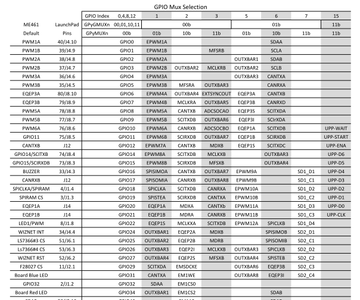
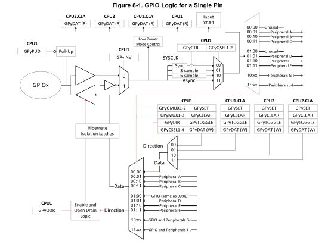

1. SE 423: Introduction to MechatronicsLecture 3: GPIOMarius Juston
Wednesday, January 28th, 2026
2. Reminders
Office Hours:
- Monday: 4-6 PM, Neel
- Tuesday: 11-1 PM, Lakshmi
- Tuesday: 1-3 PM, Samuel
- Tuesday: 2-5 PM, Dan & Marius
Lab: Starting Lab 1 this week, will be using C so be sure to be prepared! ( don’t forget to turn in commented code)!
Homeworks (Next week):
- All check-offs for homework 1 are due February 3, 5PM
- Answers and code submissions for homework 1 are due February 4, 9AM
LabVIEW (Next week):
- All check-offs for LabVIEW 1 are due February 5, 5PM
Small easy Quiz at the end of this lecture, like Monday, due at 11AM.
3. Questions?
Homework, Lab, LabVIEW, quiz questions?
( I sent an update for the reason for the 2 counters question )
4. Digital Inputs / Outputs
5. Digital Inputs / Outputs
What does it mean for something to be “digital”?
It is the control of your system / sensor using binary (0 or 1) signals.
Digital I/O is the lowest level electrical interface between software and hardware.
Almost every mechatronic system constrains at least one digital input / output.
Sensors often reduce complex physical phenomena to binary decisions ( limit reached / not reached, turned on or off )
Digital signals are inherently discrete
Digital I/O provides deterministic, low-latency interaction with the environment
6. Digital Outputs
A digital output drives a pin to a logic level:
- Logic 0 (LOW) → ≈0 V
- Logic 1 (HIGH) → ≈3.3 V / 5 V
Logic levels are represented by voltage ranges, not exact values
Internally controlled by a latch / register
Can source or sink limited current (GPIO should not be used to drive power)
Digital outputs are not power supplies and must not directly drive loads. The GPIO have a total maximum of current it can supply, shared throughout all the pins.
If you power too many devices using GPIO, you might run out of power!
Examples:
- Controlling LEDs
7. Digital Outputs
Digital output control consists of :
- Choosing the GPIO number
- Selecting the GPIO pin mux selection
- Setting direction = output
GPIO_SetupPinMux(34, GPIO_MUX_CPU1, 0);
GPIO_SetupPinOptions(34, GPIO_OUTPUT, GPIO_PUSHPULL);
You never write voltage, you write bits in registers
8. Digital Outputs

9. Controlling an LED
10. Digital Inputs
Digital input samples external voltage
Compared against logic thresholds:
- LOW
- HIGH
Examples:
- Buttons
- Switches
- Some types of encoders
Problem with floating inputs, if input is not driven:
- Voltage is undefined
- Susceptible to noise
- Input may randomly read 0 or 1
More on this with ADC
11. Pull-Up / Pull-Down Resistors
A pull-up resistor:
- Connects input to Vcc
- Defines default logic HIGH
When switch is:
- Open: input → HIGH
- Closed: input short circuits to GND → LOW
A pull-down resistor ( not used in our application ):
- Connects input to GND
- Defines default logic LOW
When switch is:
- Open: input → LOW
- Closed: input short circuits to GND → HIGH
This is all internal on the Red Board, makes it cleaner!
You don’t need to understand this, just put it in code!

12. Digital Inputs
Digital output control consists of :
- Choosing the GPIO number
- Selecting the GPIO pin mux selection
- Setting direction = input
- Enable pull-up resistor
GPIO_SetupPinMux(7, GPIO_MUX_CPU1, 0);
GPIO_SetupPinOptions(7, GPIO_INPUT, GPIO_PULLUP);
You read the binary input using:
if(GpioDataRegs.GPADAT.bit.GPIO7){
// Do stuff
}
13. A PMOS transistor pulls the pin up to 3.3 V
A push-pull output uses two transistors:
- A PMOS transistor pulls the pin up to 3.3 V
- An NMOS transistor pulls the pin down to GND
Only one is ON at a time.
When a pin is an output:
- You want deterministic voltage
- You want noise immunity
- You want defined transitions
A more detailed video here.
You don’t need to understand this, just put it in code!
Push-Pull - Output

( I wanted to create the animation for this, but if this text is still here, then it has not been done yet.)
NMOS
PMOS
Operational Amplifier
https://en.wikipedia.org/wiki/Push%E2%80%93pull_output
Speaker notes
If input is high the NPN is turned on, PNP will be off current flows from +9 to ground. NPN sources current (called push)
If input is low the PNP is turned on, NPN will be off, current flows from ground to -9V, PNP sinks current (called pull)
14. A PMOS transistor pulls the pin up to 3.3 V
A pull-up resistor is:
- Slow
- Incapable of pulling LOW
So, for outputs, pull-ups are electrically irrelevant and often harmful.
Push-Pull - Output
( I wanted to create the animation for this, but if this text is still here, then it has not been done yet.)
NMOS
PMOS
Operational Amplifier
15. Digital Outputs – too many GPIO output
Why would we run out of power?
Each GPIO output has its own transistors and can safely source or sink only a limited current.
However, all GPIOs draw that current from shared internal power and ground networks inside the chip.
Even if each individual pin is within its limit, the sum of all GPIO currents can exceed what the silicon, bond wires, or package can safely carry.
This is why microcontrollers specify both per-pin and total GPIO current limits, and why GPIOs must never be used as power supplies.
Think of each GPIO as a faucet drawing water from the same pipe.
- Each faucet has a local limit (per-pin current)
- The pipe has a global flow limit (total GPIO current)
Opening too many faucets:
- Reduces pressure
- Stresses the pipe
- Causes failure elsewhere
16. Pull-Up / Pull-Down Resistors - Input
What an input pin is:
- Pin becomes high-impedance, sensitive to low current, allowing for high voltages
- Sensitive to noise
The internal pull-up:
- Weak resistor (~20-50 kΩ)
- Slightly biases pin to logic HIGH
- Can be overridden by external hardware (button to GND)
Without pull-up, just using floating-inputs, you would be sensitive to random noise, returning:
- Random bits
- Thus, unpredictable control behavior
17. Pin Mux
18. Pin Mux
The Red Board has only 80 pins but 160 GPIO!
We also need the pins to do multiple specialized things,
- GPIO (General Purpose Input-Output)
- PWM output (Pulse Width Modulation)
- SPI (Serial Peripheral Interface)
- I2C (Inter-Integrated Circuit)
- CAN (Controller Area Network)
- UART (Universal Asynchronous Receiver-Transmitter)
- ADC trigger, etc. (Analog-to-Digital Converter)
Whole list is in the pin mux list, you will be using this in Lab 1!
This sharing is managed by the pin multiplexer!
Pins and GPIOs are not for hardware wiring / optimality reasons.
19. What is the Pin Multiplexer (PinMux)
This is a hardware switch that selects which peripheral controls a pin:


20. Pin Mux
Up to twelve independent peripheral signals are multiplexed on a single GPIO-enabled pin in addition to
the CPU-controlled I/O capability.
Each pin output can be controlled by either a peripheral or one of the
four CPU masters (CPU1, CPU1.CLA, CPU2, or CPU2.CLA). There are six I/O ports:
- Port A consists of GPIO0-GPIO31
- Port B consists of GPIO32-GPIO63
- Port C consists of GPIO64-GPIO95
- Port D consists of GPIO96-GPIO127
- Port E consists of GPIO128-GPIO159
- Port F consists of GPIO160-GPIO168
GpioDataRegs.GPBTOGGLE.bit.GPIO34 = 1;
21. Pin Mux

( I wanted to create the animation for this, but if this text is still here, then it has not been done yet.)
PinMux has 12 inputs, requires how many bits in the selector?
Speaker notes
If a student wants to help me create the animation. I would love your help!!! It takes a lot of time to make these things work!
Group mux = G
There are 8 groups, 0,
22. Pin Mux – Code ( Not the exact code for reduced spacing )
void GPIO_SetupPinMux(Uint16 gpioNumber, Uint16 cpu, Uint16 muxPosition)
{
volatile Uint32 *gpioBaseAddr; // volatile means that the variable may change from external sources (i.e. interrupts)
volatile Uint32 *mux, *gmux, *csel;
Uint16 pin32, pin16, pin8;
pin32 = gpioNumber % 32;
pin16 = gpioNumber % 16;
pin8 = gpioNumber % 8;
gpioBaseAddr = (Uint32 *)&GpioCtrlRegs + (gpioNumber/32)*GPY_CTRL_OFFSET;
mux = gpioBaseAddr + GPYMUX + pin32/16;
gmux = gpioBaseAddr + GPYGMUX + pin32/16;
csel = gpioBaseAddr + GPYCSEL + pin32/8;
EALLOW; // block that controls the physical multiplexer
// 0x3UL means 0b11 but in int32_t (i.e. 0b11 with 30 leading 0s)
*mux &= ~(0x3UL << (2*pin16));
*gmux &= ~(0x3UL << (2*pin16));
*gmux |= (Uint32)((muxPosition >> 2) & 0x3UL) << (2*pin16);
*mux |= (Uint32)(muxPosition & 0x3UL) << (2*pin16);
*csel &= ~(0x3L << (4*pin8));
*csel |= (Uint32)(cpu & 0x3L) << (4*pin8);
EDIS;
}
23. Common PinMux mistake
GPIO_SetupPinMux(19, GPIO_MUX_CPU1, 0);
GPIO_SetupPinOptions(19, GPIO_OUTPUT, GPIO_PUSHPULL);
- Using the pin number instead of the GPIO number
- Using the wrong GPIO for the pin that you want
- Direction is not set correctly
- Pull-up disabled unintentionally
- Make sure to read the documentation
24. Git / GitHub
25. Git / GitHub
Working Directory
Staging Area
Local Repository
Remote Repository
Local (git)
Remote (GitHub)
git push
git clone
git commit
git add
git pull
git checkout